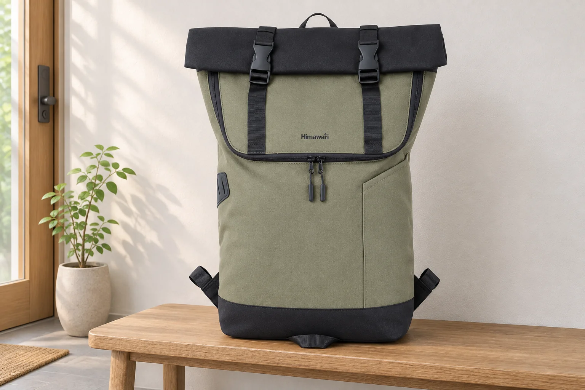
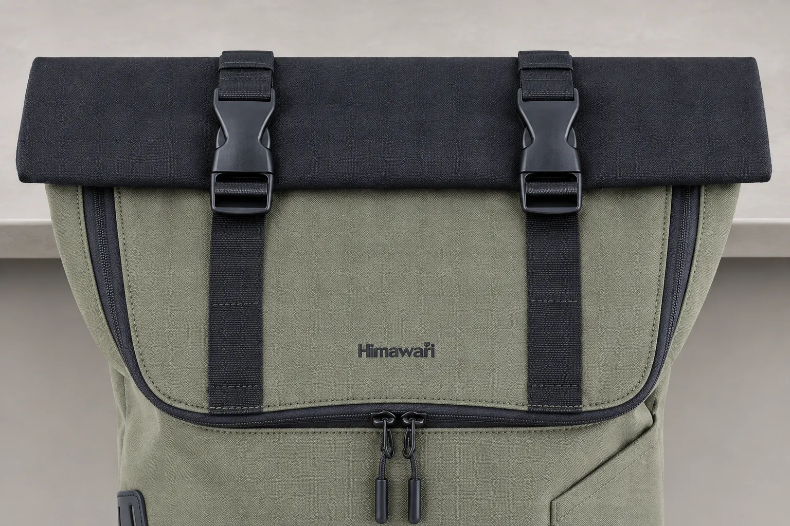
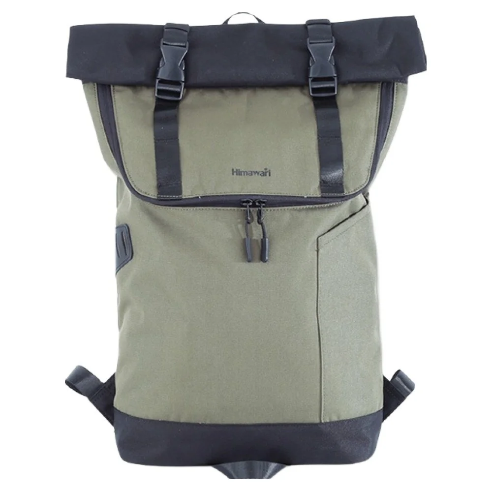

백팩 윗단의 버클 두 개는 어떻게 풀어야 덜 비틀릴까

접힌 윗단에 버클이 두 개 달린 백팩을 세웁니다. 한쪽 버클을 풀어 보세요. 손을 떼면 풀린 쪽 천만 조금 움직일 수 있습니다. 맞은편 버클은 그대로 남기도 합니다. 이때 풀린 쪽을 잡아 올리면 아직 잠긴 끈까지 함께 당겨집니다. 짐을 꺼내려던 손이 입구에 닿기도 전에 가방 전체가 돌아가는 경우죠. No.1682의 실제 정면 사진에는 두 버클이 보입니다. 가방을 책상이나 벤치에 놓습니다. 두 부품을 기준으로 여는 순서를 따라가 봅니다.
가방을 받친 손으로 접힌 천을 놓아 줍니다
가방을 안고 열 때는 몸으로 받치는 위치가 달라집니다. 여는 도중에 몸판이 따라 움직이면 어느 부품을 잡아야 할지 보기도 어렵습니다. 처음 동작을 익힐 때는 평평한 곳에 가방 바닥을 받칩니다. 앞판이 자신을 향하도록 놓으세요. 뒤쪽으로 넘어가려는 모양이라면 등을 손으로 받칩니다. 꼭 똑바로 세울 이유는 없어요. 닫힌 윗단에는 힘을 주지 않습니다. 그 상태에서 두 버클을 모두 손으로 만질 수 있으면 됩니다.
한 손을 접힌 검은 천 가운데에 가볍게 올려두세요. 다른 손으로 가까운 버클을 풉니다. 가운데의 천을 펼치거나 몸판 쪽으로 누를 필요는 없습니다. 한쪽 버클이 풀릴 때 윗단 전체가 들리는지 느껴 보세요. 그동안 가운데를 받쳐 접힌 모양을 잠시 유지합니다. 오른손이 편하다고 늘 오른쪽부터 열어야 하는 것도 아닙니다. 몸판을 받치는 손이 어디에 놓이는지 보세요. 그 손이 남은 버클을 가리지 않는 쪽에서 시작하면 됩니다.

하나를 푼 뒤 바로 입구를 들고 싶어질 때
첫 버클의 맞물린 부분이 분리되면 풀린 쪽 끈을 손에서 내려놓습니다. 풀린 쪽을 바로 잡아 올리면 접힌 천이 사선으로 들립니다. 그러면 맞은편에 잠긴 끈을 타고 앞판까지 움직일 수 있어요. 두 손으로 윗단을 벌리고 있으면 남은 버클을 누르기 어렵습니다. 잠긴 쪽 아래의 천이 당겨 올라오나요? 이미 풀린 쪽부터 내려놓고 다시 잡습니다.
남은 버클이 눌리지 않나요? 더 세게 쥐기 전에 아래의 끈을 보세요. 위쪽 천을 당겼을 때 끈이 팽팽해졌나요? 손을 낮춰 당기는 힘을 줄여 봅니다. 손가락 끝에 닿는 부품이 정확히 어디인지도 확인합니다. 붙잡기 쉬운 천과 눌러야 할 부품은 서로 가까워서 어두운 곳이나 가방을 몸에 끌어안은 상태에서는 헷갈릴 만합니다. 손가락을 넣을 자리가 좁을 때는 가방을 돌려 보세요. 두 손이 모두 닿는 쪽에서 다시 잡습니다.
두 버클을 모두 풉니다. 떨어진 끈 끝이 여는 쪽으로 들어오지 않는지 살핍니다. 이때 접힌 천을 들어 보고 필요한 만큼만 입구를 엽니다. No.1682에서는 검은 가로 접힘과 아래 올리브색 패널 둘레의 지퍼가 가까이 보입니다. 여밈이 이렇게 모인 가방에서는 지금 열고 있는 부분을 손으로 다시 짚기 쉽습니다. 사진에 보이는 버클 위치를 보고 여는 순서를 익힐 수 있습니다. 안쪽에 어느 길로 접근할 수 있는지는 실제 가방과 제품 안내에서 확인하세요.
빈 상태에서는 잘 풀리고 짐을 넣으면 뻣뻣할 때
빈 가방에서도 같은 버클이 뻣뻣한지 확인하면 짐을 넣은 뒤 생긴 변화와 비교하기 좋습니다. 가방을 테이블에 받쳐 놓으세요. 두 버클이 잠겼을 때 각 끈이 몸판 어디에서 올라가는지 봅니다. 짐을 꾸린 다음에도 같은 방향으로 놓고 비교합니다. 위쪽을 손으로 들어야만 버클에 손이 닿았다면 버클이 달라진 것인지, 손을 넣는 동작이 달라진 것인지 아직 판단하기 어렵습니다.
한 번에 눌러도 분리되지 않는 부품을 억지로 비틀어 볼 이유는 없습니다. 가방을 눕혀 앞판이 위로 당겨지지 않게 받칩니다. 그래도 부품이 움직이지 않거나 반대쪽에 없는 틈이 생겼나요? 접힌 천 전체와 해당 버클의 옆면을 찍어 제품 문의에 쓰세요. 두 버클은 같은 조건에서 찍습니다. 사진을 나란히 보내면 한쪽이 헐겁다는 인상보다 구체적으로 상태를 설명할 수 있습니다. 단단한 물건으로 눌러 열거나 끈을 잡아채는 동작은 피합니다.

가방을 사기 전에 실제로 펼치는 장면을 봅니다
제조사 카탈로그의 No.1682 외부 크기는 가로 30cm, 세로 50cm, 폭 14cm입니다. 닫힌 상태의 실제 정면 사진에는 짙은 색 윗단과 두 개의 버클, 패널 둘레의 지퍼와 그 끝의 손잡이가 보입니다. 크기와 정면 사진만으로 한 손을 어디에 받치고 어느 만큼 들어야 물건을 꺼낼 수 있는지까지 정하기는 어렵습니다. 여는 편의가 중요하다면 닫힌 모습 옆의 사진도 보세요. 한쪽 버클을 푼 모습과 두 쪽을 푼 모습을 찾아봅니다.
가방을 뒤로 잡아당긴 채 곧바로 여는 사람도 있습니다. 어디든 내려놓고 두 손으로 여는 사람도 있죠. 평소 어느 쪽에 가까운지에 따라 같은 형태를 보는 기준도 달라집니다. 가방을 잠시 내려놓기 쉬운가요? 두 번째 버클에 손을 다시 얹을 공간이 있는지 보면 됩니다. 서서 가방을 열 일이 잦다면 몸판을 어디에 받칠 수 있을지 떠올려 보세요. 파는 곳에 가방 문의를 할 때도 “한 손으로 열려요?”보다 “첫 버클을 열었을 때 윗단을 받친 채 다른 버클을 풀 수 있는 모습을 볼 수 있나요?”처럼 동작을 밝혀 물을 수 있습니다.
가방을 다시 쓸 때 확인할 순서는 간단합니다. 바닥을 받치고 가까운 쪽 버클부터 풉니다. 접힌 천을 올리기 전에 남은 버클을 잡습니다. 남은 쪽이 뻣뻣하면 이미 열린 쪽의 높이를 낮추고 끈이 당겨지는지 살핍니다. 두 쪽이 풀린 다음 입구를 열면, 어느 동작에서 앞판이 함께 돌아갔는지도 기억하기 쉬워요. 다시 닫을 때는 제품 안내에 맞춰 여밉니다. 손을 떼기 전에 두 버클이 모두 연결됐는지 확인합니다.